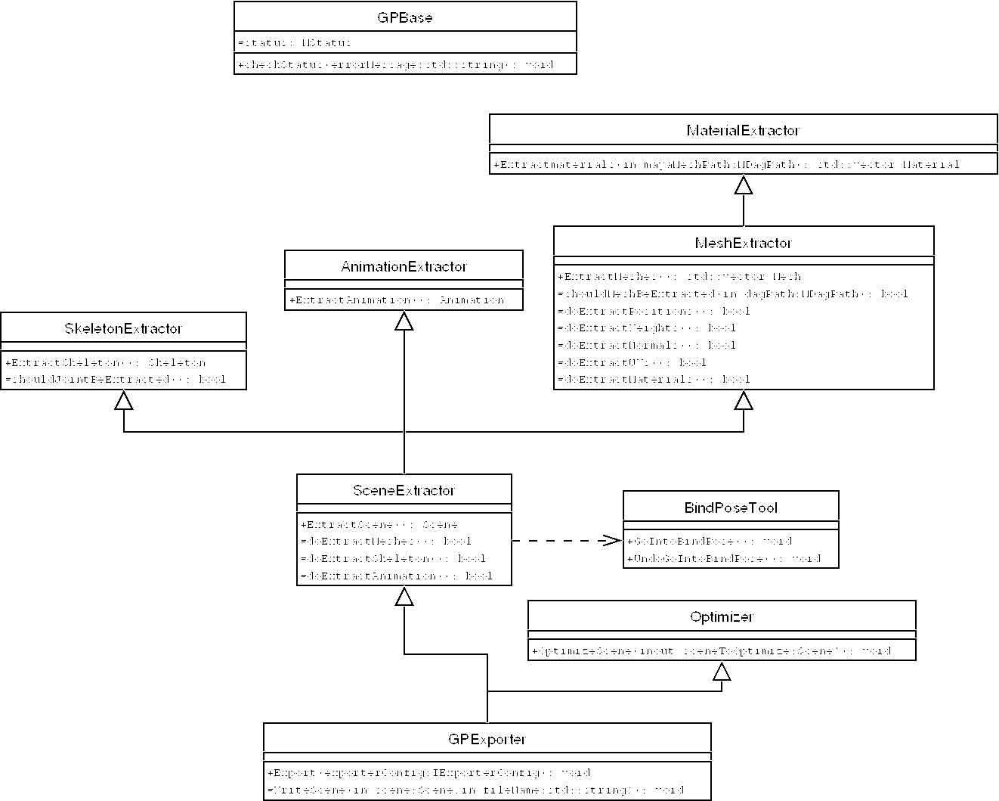
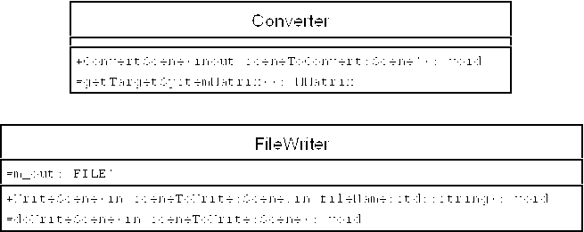

|
During this project an exporter-framework emerged: gpExport. It
extracts typical model-information game-exporters need. The developer
just needs to implement the writing-part of the plug-in.
 Although the UML-diagram doesn't show it, all classes inherit virtually
from gpBase, which is just a helper-class providing a
status-variable (needed for almost all Maya-calls), and ways to check it. The doXXX- and shouldXXX-functions are
template-methods, to configure the exporter. They are all taken care of by
GPExporter, which takes the configuration from the
exporterConfig, that has been passed to it
(IExporterConfig is basically just an interface for all these
parameters). In addition to the shown classes, gpExport provides two additional
classes:
- a
converter-class
- and a
fileWriter-class
Both of them are utility-classes for implementing the abstract
WriteScene-method. 
This section essentially describes, how to use gpExport to easily
implement a standard exporter. I'll take MS3D (MilkShake3D) as
example. As this is really not a MS3D-tutorial, I won't
go into details for the writing-part though.
Let's start by completing the GPExporter-class
ms3dExporter.hpp:
19: class MS3DExporter
20: : virtual protected GPBase,
21: public GPExporter,
22: protected MS3DWriter
23: {
24: public:
25: void Export(const IExporterConfig& config)
26: { GPExporter::Export(config); }
27:
28: protected:
29: void WriteScene(const Scene& extractedScene,
30: const std::string& outFile)
31: { MS3DWriter::WriteScene(extractedScene, outFile); }
32: };
|
MS3DExporter redirects its Export-method to
the GPExporter-part, which will call WriteScene after
having extracted the necessary information. WriteScene itself
is forwarded to the MS3DWriter-part.
MS3DWriter on the other hand uses Converter and
FileWriter to do its task. In particulary it doesn't implement
the WriteScene itself, but provides the
doWriteScene-method, which is called by the
FileWriter-class.
Completing the GPExporter-class is not sufficient. One still
needs to create a plugin or executable.
gpExport already provides a basic plugin-class, that should be
sufficient for most uses. Obviously it isn't complete, as the plugin-class
contains exporter-specific information (the name, extension, etc.).
Information, that can be demanded at runtime over virtual methods are pure
virtual in the gpExport-plugin class. These are the
getExtension- and Export-method. A custom exporter
therefore needs to implement these methods (ms3dPlugin.cpp):
16: class MS3DPlugin
17: : public GPTranslation::Plugin
|
21: // template-method (of GPTranslation::Plugin)
22: std::string
23: getExtension() const
24: {
25: return extension;
26: }
|
47: void
48: Export(const IExporterConfig& config)
49: {
50: // MS3DExporter::Export(config); // can't do :(
51: MS3DExporter exporter;
52: exporter.Export(config);
53: }
|
In addition Maya needs two static methods: initializePlugin
and uninitializePlugin. initializePlugin provides
a plugin-description (MPnPlugin) to Maya, and registers the
exporter (translator). One parameter is a static function, that allows to
create our translator:
31: static
32: void*
33: creator()
34: {
35: return new MS3DPlugin();
36: }
|
57: MStatus initializePlugin(MObject obj)
58: {
59: using namespace MS3DTranslation;
60:
61: MFnPlugin plugin(obj,
62: vendor,
63: version,
64: requiredApiVersion);
65:
66: // Register the translator:
67: return plugin.registerFileTranslator(translatorName,
68: (char*)pixmapName,
69: MS3DPlugin::creator,
70: (char*)optionsScript,
71: (char*)defaultOptions);
72: }
|
All those variables (vendor, ...) have been defined earlier:
7: const char* const translatorName = "MS3D_Export";
8: const char* const pixmapName = "none";
9: const char* const optionsScript = "MS3D_opts";
10: const char* const defaultOptions = "";
11: const char* const extension = "ms3d";
12: const char* const vendor = "OpenSource";
13: const char* const version = "0.1";
14: const char* const requiredApiVersion = "Any";
|
And now finally the uninitializePlugin-function:
74: MStatus uninitializePlugin(MObject obj)
75: {
76: MFnPlugin plugin(obj);
77: return plugin.deregisterFileTranslator(MS3DTranslation::translatorName);
78: }
|
The code for executables is even simpler: One just needs to provide the
classical main-function, and call exportScene of the
executable.hpp-header (ms3dExecutable):
10: int
11: main(int argc, char** argv)
12: {
13: try
14: {
15: if (argc != 3)
16: {
17: printUsage(argv[0]);
18: return -1;
19: }
20:
21: MS3DTranslation::MS3DExporter exporter;
22:
23: GPTranslation::exportScene(argv[0],
24: exporter,
25: argv[1],
26: argv[2]);
27: return 0;
28: }
29: catch (...)
30: {
31: return -1;
32: }
33: }
|
And here's the signature of the exportScene-function:
13: void exportScene(const std::string& exporterName,
14: GPExporter& exporter,
15: const std::string& inFile,
16: const std::string& outFile);
|
This simplicity induces some restrictions: there's no way of
paramizing the exporter. If this is needed (which is usually the case), one
needs to copy some lines out of the executable.cpp-file, and
implement the exportScene-method on his own. Fortunately the code
is short (6 code-lines) and not difficult. The only difficulty in creating executables lies in the linking. A
Maya-executable needs a bunch of libraries (in the correct order). If
you want to win some time, use gpExport's Makefile.
|